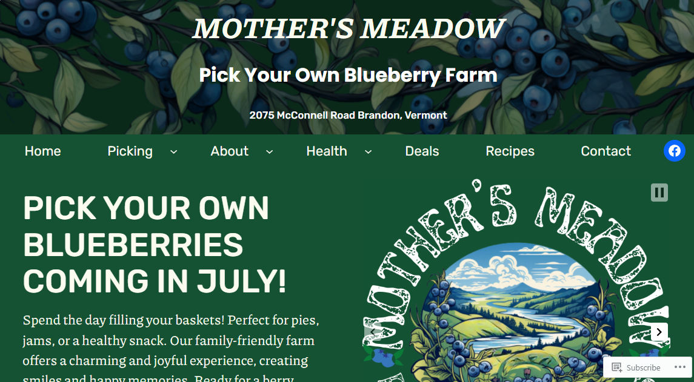

Mother's Meadow
WordPress • June 2024
Overview
Mother’s Meadow is a newly launched pick-your-own blueberry farm in Brandon, Vermont. I designed the full online presence to help them establish their brand, attract visitors, and communicate key seasonal updates. In addition to building the WordPress site, I created the logo, branding assets, and photography myself — and linked the website to their newly created Facebook business page for announcements, engagement, and visitor updates.
My Role
- Designed and built the WordPress website using a custom layout focused on clarity, warmth, and simplicity
- Collaborated closely with the farm owner to define brand tone, messaging, and seasonal communication strategy
- Created the logo, brand palette, banner graphics, and image assets using Canva
- Shot and edited original photography on-site, including landscapes, farm rows, signage, and blueberries
- Set up the official Facebook business page and linked it to the website for cross-platform announcements
- Wrote content for homepage, FAQ, seasonal updates, and pick-your-own guidelines
- Created a mobile-friendly layout for farm visitors accessing the site from the field
Highlights
- Designed the farm’s visual identity — logo, color palette, and photography-based branding
- Created social media presence (Facebook Business Page) and connected it to the website for real-time updates
- Developed educational content on berry varieties, farm etiquette, and growing process
- Designed fully mobile-responsive layouts for visitors using phones while at the farm
- Used Canva and Photoshop to create graphics and identity pieces that extend beyond the website
Brand Identity & Visual Design
I developed the farm's visual identity from the ground up — designing logos, signage, Facebook header graphics, and promotional images using Canva and original photography. The branding reflects the rustic, local, and family-owned nature of the farm.
- Created logo variations for web, print, and social media use
- Designed Canva-based branded banners and promotional seasonal graphics
- Shot original photography on-site to ensure authentic visuals
- Designed Facebook cover photo and social profile imagery consistent with branding
What This Project Demonstrates
- Ability to design both a website and full brand identity for a new business
- Experience combining WordPress, Canva design, real photography, and social media strategy
- Understanding of mobile usability for outdoor/location-based businesses
- Skill in working directly with a real business owner to translate mission into visual identity